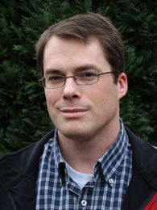

Bart Kastermans is a mathematician and engineer based in the Netherlands, looking to return to academic research. He holds a PhD in mathematical logic from the University of Michigan, and was a postdoc at the University of Wisconsin-Madison and a tenure-track assistant professor at the University of Colorado Boulder before moving to industry in 2012. At KPN he has worked as a data scientist, as tech lead of the real-time streaming platform, and as security and principal engineer, including designing, mathematically analysing, and implementing an encryption service with automated key rotation. Since February 2026 he has been researching quantum computing at KPN, in collaboration with TU Delft, focusing on how to reliably assess circuits run on noisy quantum hardware.
At the University of Michigan he wrote his thesis in set theory, Cofinitary Groups and Other Almost Disjoint Families, under the supervision of Andreas Blass and Yi Zhang, including a year visiting Yi Zhang at Sun Yat-sen University in Guangzhou. As a postdoc in Madison he worked with Steffen Lempp on computability theory, including the paper Comparing Notions of Randomness. He has also formalized mathematics in Isabelle/HOL, contributing to the Archive of Formal Proofs.